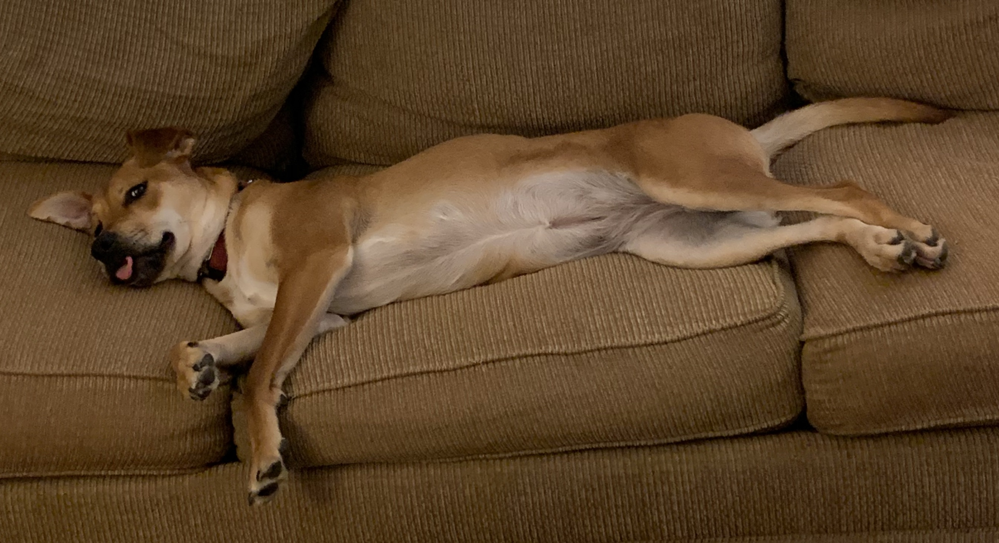

Sadie's Life Stories
Growing up, my life wasn't as peaceful as it is now. I was born and grew up in a kill shelter in Tennesse. I'm glad I made it to Minnesota, otherwise I wouldn't have been paired with these great folks.
They let me run, play, get excited, and most importantly rest. I don't know what I would do without them! I can't wait until the winter so I can lick up all the snow and for those annoying squirrels to stop bothering me!